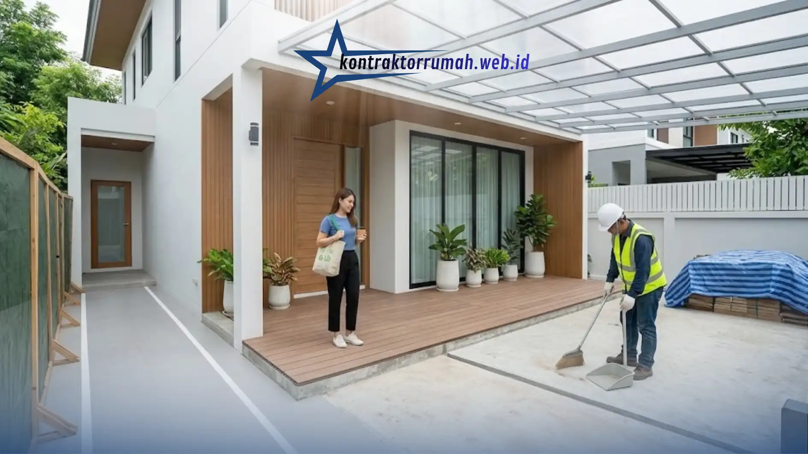

Renovasi Teras Rumah Minimalis Tanpa Mengganggu Aktivitas Harian
Anggun Tri Stya · 5 Menit Baca
Teras adalah wajah rumah sekaligus jalur keluar-masuk yang dilewati setiap hari. Karena itu, banyak orang
menunda renovasi teras rumah minimalis dengan alasan takut rumah berdebu, berisik, atau berantakan
berminggu-minggu.
Kabar baiknya, kekhawatiran itu bisa diminimalkan lewat perencanaan yang matang. Berikut lima langkah
praktis agar teras baru selesai tanpa membuat rutinitas keluarga terganggu.
Poin Penting
Pisahkan area kerja dengan terpal, plastik, atau triplek, dan sediakan koridor bersih bagi penghuni.
Pilih metode kering seperti decking WPC, rangka baja ringan, dan panel siap pasang untuk mengurangi debu dan waktu kerja.
Sepakati jadwal tertulis: hindari pekerjaan bising pada jam istirahat, malam hari, dan akhir pekan.
Jaga kebersihan harian: sapu area kerja tiap sore dan amankan kabel, alat tajam, serta tumpukan material.
Beri tahu tetangga dan sisakan waktu cadangan untuk hujan atau keterlambatan material.
1. Pisahkan Area Kerja dari Jalur Penghuni
Pasang pembatas sementara dari terpal tebal, plastik, atau papan triplek untuk menahan debu dan mencegah
orang masuk ke area kerja. Jika teras adalah satu-satunya akses, sediakan koridor sempit yang bersih dan
aman, atau gunakan pintu samping selama pengerjaan. Beri perhatian khusus pada anak-anak dan hewan
peliharaan agar tidak mendekati alat dan material.
2. Pilih Material dan Metode Kerja yang Cepat dan Minim Debu
Pengerjaan basah seperti mengaduk semen atau membongkar lantai menghasilkan banyak debu dan butuh waktu
lama. Metode kering (dry construction) bisa jadi alternatif:
Decking kayu sintetis (WPC): bisa dipasang di atas lantai lama sehingga tidak perlu
membongkar keramik.
Rangka baja ringan dengan atap polycarbonate atau galvalum: dirakit dari komponen
yang sudah dipotong, sehingga pemasangan lebih cepat.
Panel dinding atau lantai siap pasang: mengurangi pekerjaan plester dan acian.
Minta tukang memotong material di area terpisah, bukan di jalur lalu lintas rumah.
Buat kesepakatan tertulis dengan tukang atau kontraktor tentang jam kerja, target durasi, dan tahapan
pekerjaan. Hindari pekerjaan bising, seperti memotong keramik atau membongkar beton, pada jam istirahat,
malam hari, dan akhir pekan. Lebih baik lagi jika pekerjaan paling bising dijadwalkan saat rumah
kosong.
4. Jaga Kebersihan dan Keamanan Setiap Hari
Minta tim menyapu dan merapikan area kerja setiap sore agar rumah tidak terus berdebu. Pastikan juga:
Kabel listrik dan instalasi lampu lama dimatikan atau diamankan sebelum pekerjaan dimulai.
Peralatan tajam dan material berat tidak dibiarkan tergeletak di jalur keluar-masuk.
Tersedia satu sudut khusus untuk menumpuk material, ditutup terpal, dan jauh dari akses utama.

Menyapu dan merapikan area kerja setiap sore menjaga rumah tetap bersih selama
renovasi teras berlangsung.
Informasikan rencana renovasi kepada tetangga, terutama soal jadwal dan potensi suara. Ini menjaga
hubungan baik dan mencegah keluhan di tengah pengerjaan. Sisakan juga waktu cadangan, karena hujan atau
keterlambatan material bisa menggeser jadwal.
FAQ Seputar Renovasi Teras Rumah Minimalis
Bisa. Pisahkan area kerja dari jalur penghuni dengan pembatas sementara, pilih material dan metode kerja yang cepat serta minim debu, sepakati jam kerja sejak awal, jaga kebersihan setiap hari, dan beri tahu tetangga. Dengan kelima langkah ini, gangguan debu, bising, dan keberantakan dapat ditekan.
Gunakan metode kering (dry construction). Contohnya decking kayu sintetis (WPC) yang dipasang di atas lantai lama sehingga keramik tidak perlu dibongkar, rangka baja ringan dengan atap polycarbonate atau galvalum yang dirakit dari komponen terpotong, serta panel dinding atau lantai siap pasang yang mengurangi pekerjaan plester dan acian.
Pasang pembatas sementara dari terpal tebal, plastik, atau papan triplek. Minta tukang memotong material di area terpisah, bukan di jalur lalu lintas rumah. Sapu dan rapikan area kerja setiap sore, serta tutup tumpukan material dengan terpal di satu sudut yang jauh dari akses utama.
Hindari pekerjaan bising, seperti memotong keramik atau membongkar beton, pada jam istirahat, malam hari, dan akhir pekan. Lebih baik lagi jika pekerjaan paling bising dijadwalkan saat rumah kosong. Tuliskan jam kerja, target durasi, dan tahapan pekerjaan dalam kesepakatan dengan tukang atau kontraktor.
Sebaiknya ya. Informasikan jadwal dan potensi suara sebelum pekerjaan dimulai agar hubungan baik terjaga dan keluhan di tengah pengerjaan dapat dicegah. Sisakan juga waktu cadangan, karena hujan atau keterlambatan material bisa menggeser jadwal.
Renovasi teras tidak harus mengorbankan kenyamanan rumah. Dengan area kerja yang terpisah, material siap
pasang, jadwal yang jelas, kebersihan terjaga, dan komunikasi yang baik dengan tetangga, hasilnya bisa
dinikmati tanpa drama selama proses. Mulailah dengan menyusun rencana dan jadwal kerja bersama tukang,
lalu tentukan desain minimalis yang Anda inginkan.
Jika Anda butuh pendamping tepercaya, tim jasa renovasi bangunan
Kontraktor Rumah siap membantu dari perencanaan, pelaksanaan, hingga serah terima.
Ditulis oleh
Anggun Tri Stya
Tim konten & teknis Kontraktor Rumah, menulis panduan seputar konstruksi dan
desain interior berdasarkan pengalaman lapangan tim.
Berizin & Bersertifikat Sejak 2008
Konsultasikan Anggaran Bangun atau Renovasi Anda Secara Gratis
Kontraktor Rumah hadir sebagai penyedia jasa bangun, renovasi, dan desainer interior terpercaya, siap
membantu dari perhitungan RAB hingga eksekusi lapangan.
Cara negosiasi harga kontraktor untuk pemula: 7 langkah aman mulai dari membaca RAB, penawaran pembanding, hingga kontrak tertulis agar anggaran terkendali.
6 ide desain kamar mandi kecil agar terasa lega, rapi, dan nyaman: warna cerah, kloset gantung, sekat kaca, niche dinding, pencahayaan, hingga sentuhan alami.